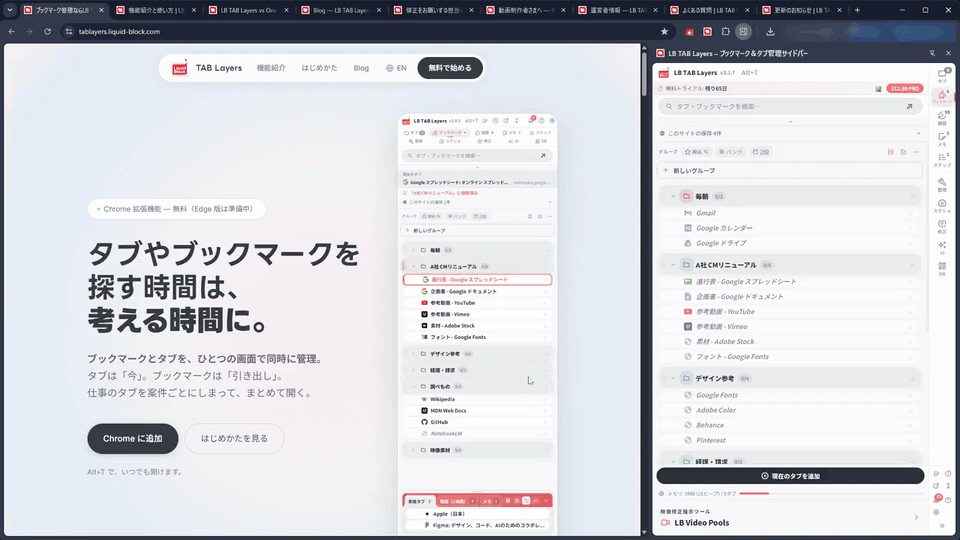
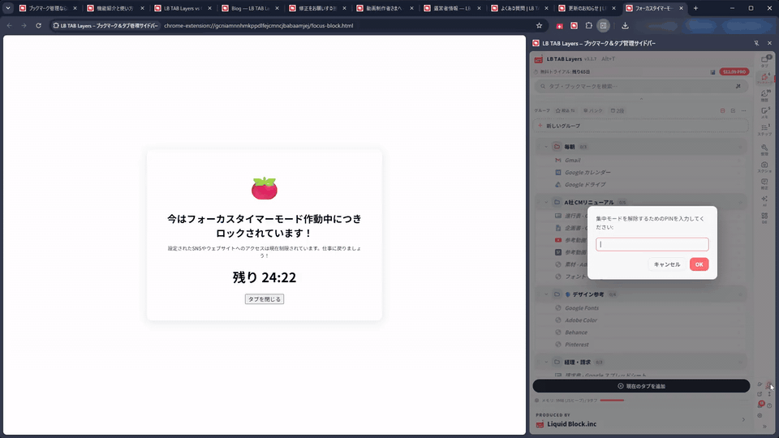

フォーカスタイマー
決めたグループのサイトを、25 分のあいだ開けなくする。解除には暗証番号
場所：右の列の下の時計／グループの右クリック
グループを右クリックして「ブロック対象に設定」したうえで、時計のボタンを押すと、25 分のあいだ、そのグループのサイトを開けなくなります。途中で止めるには、暗証番号を入れます。


決めたグループのサイトを、25 分のあいだ開けなくする。解除には暗証番号
場所：右の列の下の時計／グループの右クリック
グループを右クリックして「ブロック対象に設定」したうえで、時計のボタンを押すと、25 分のあいだ、そのグループのサイトを開けなくなります。途中で止めるには、暗証番号を入れます。


時計・日付・天気。20〜60 分のタイマー
場所：ピンバーの段を切り替える
見ているページを添えて、要約や質問をする（Chrome 内蔵 AI／Gemini のキー）
場所：右の列「AI」
検索の言葉から、関係のある保存を AI が探す
場所：検索の右の杖
グループを RSS のフォルダにして、新着を画像つきで見る。ページの RSS を見つけて足す
場所：グループの作成・編集
Gmail や Slack などの未読の数を、グループとタブに出す
場所：自動
ページを小窓で開く。グループの YouTube を、続けて再生する
場所：保存したタブ・グループの右クリック